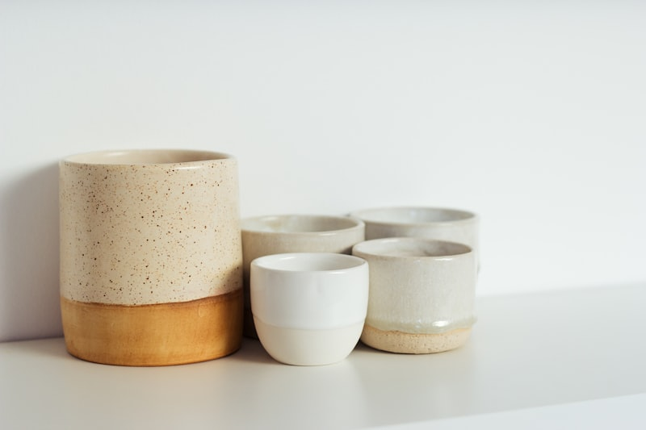

A Commitment to Clay
Dinnervoraix was established with a singular, unwavering mission: to rescue the fading art of true clay-throwing and introduce it to luxury tablescapes. In a world increasingly saturated by plastic cups and mass machine-pressed plate outlines, we dedicate our studio to kaolin porcelain clays and natural mineral glazes. We believe a plate is not simply a food server; it is a structural representation of culinary taste, hospitality, and ceramic art.
Each clay block is sourced individually from high-purity mineral quarries in England. Once received at our atelier, the bodies are wedged, wheel-thrown, and glazed entirely by hand. Hand-trimming plate bases removes weight deviations without losing strength, allowing dinner plates to stack seamlessly. It is this minute attention to microscopic details that allows our products to sustain a Lifetime Chip Guarantee.
Our Three Ceramic Pillars

01. Hand Thrown Clay
We throw every vessel loop-by-loop on traditional kickwheels, avoiding pressure casting structures completely.

02. Lifetime Servicing
Traditional high-fire glazes are repairable. If a rim chips, our chemists can re-fire and re-glaze it individually.

03. Bespoke Metallurgy
We paint our plate highlights in solid gold leaf and platinum slips, fusing metal particles into the glaze coat under kiln fire.

The Atelier Future
As Dinnervoraix looks to the upcoming decade, we remain anchored in our slow-craft principles. We maintain a small studio of certified ceramicists, limiting our global output to a few hundred curated dinner sets per year. This exclusivity ensures that every plate shipped is personally inspected and kiln-tested. Dinnervoraix is a lifetime commitment to dining art, tablescape aesthetics, and pottery preservation.